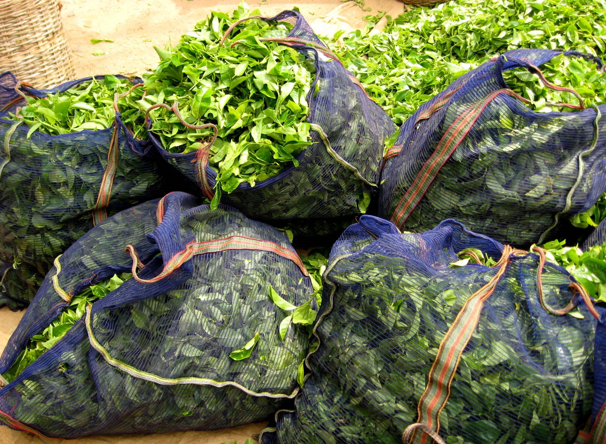
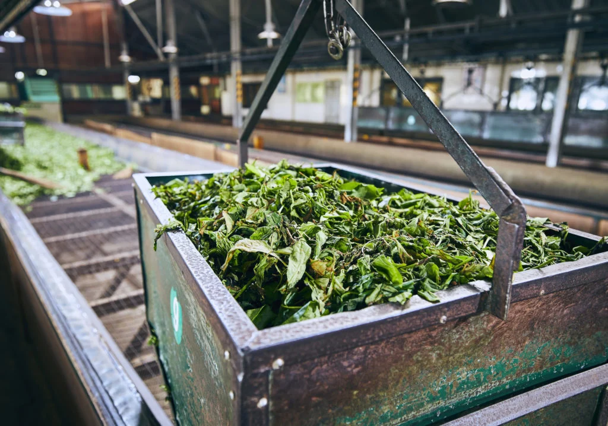

Welcome to Paradise Teas
Sri lanka an island made for tea
Sri lanka an island made for tea
Introduced in 1867, Ceylon Tea has developed into Sri Lanka's main agricultural export, generating close to 1 million jobs both directly and indirectly. Approximately 4% of the nation's land area, or close to 203,000 hectares, is occupied by tea plantations.Sri lanka an island made of tea. The nation produces tea all throughout the year.

Tea produced in these regions is primarily categorized by elevation, with high-grown tea coming from plantations located above 1200 m, medium-grown tea from estates dispersed between 600 m and 1200 m, and low-grown tea produced between sea level up to 600 m.
The nation produces tea all throughout the year; its annual production is estimated to be around 340 million kg. The majority of Sri Lanka's tea-growing regions are found in the island's southern and central inland regions.
its annual production is estimated to be around 340 million kg. The majority of Sri Lanka's tea-growing regions are found in the island's southern and central inland regions.
Due to the fact that exports are one of Sri Lanka's primary sources of foreign money, the impact of the current pandemic crisis on each industry varied, and in recent times, this impact on the export sector of the country has been a matter of controversy. Even though individuals who spoke with The Morning indicated that tea production had continued despite the problems at hand, they all concurred that the pandemic had a negative impact on the sector, mostly because of increasing expenses tied to Covid-19-related measures.
Fernando further explained how the pandemic crisis had an impact on the industry's overall performance by driving up expenses dramatically and forcing tea companies to implement infrastructure they had never thought of before.